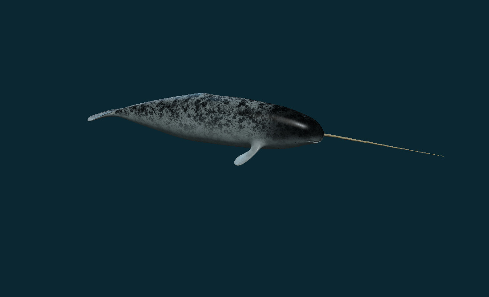
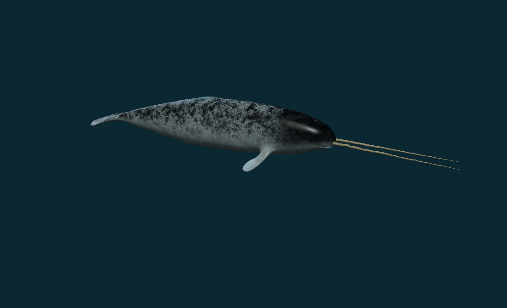
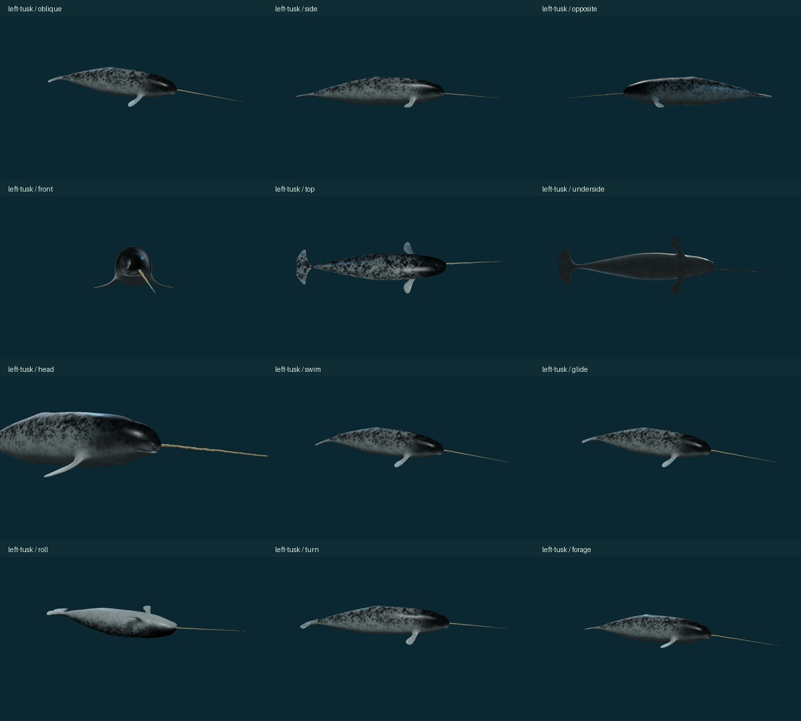
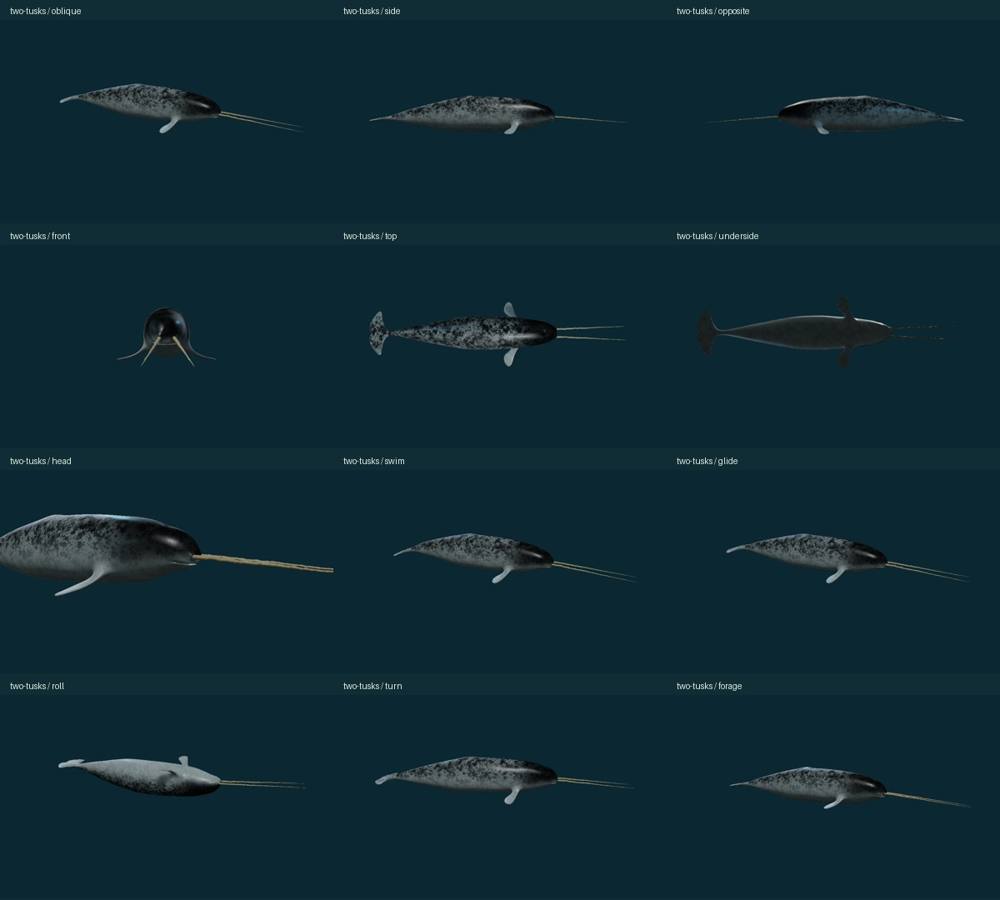
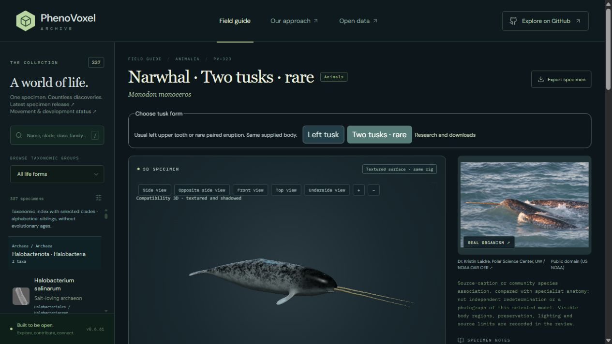

Narwhal: the supplied model, in two tusk forms
Detailed mottled skin and ivory tusks now follow your supplied 3D body. The usual form has the anatomical left upper tusk; the rare comparison has both upper tusks. Both use the same body, material maps and finite studies.
Open the interactive 3D study · Open archive record · Left-tusk GLB · Two-tusk GLB


What changed
The source body, flippers, horizontal flukes and low dorsal ridge retain their shape and UV layout. The body receives a uniform display transform only, normalized to 4.5 units without a physical measurement claim. The supplied left and right spiral tusks remain separate parts. Previously repaired eyes from this same artist asset and closed tusk-tip repairs are retained.
Original generated skin and ivory tiles are projected over the existing UVs using neutral 3D positions. Regional masks add irregular dark dorsal mottling, a darker head cap and a paler belly. Separate roughness, restrained normal detail and wet dielectric highlights replace a flat painted appearance. The artist’s normal and occlusion maps remain byte-exact. The generated tiles are 1254 × 1254 pixels; the baked atlas maps are 2048 × 2048. The larger atlas is not a claim of additional captured detail. No supplied-photo pixels are redistributed.
Research and scientific scope
This is a reference-led exterior reconstruction, with independent biological review still pending. A photograph, sculpture or realistic-looking material does not establish a measured individual, calibrated physiology or certified accuracy. Qualitative proportions in the supplied body were retained; the evidence did not justify an unsupported anatomical resculpt.
| Evidence reviewed | Finding and model decision |
|---|---|
| Fisheries and Oceans Canada, 2005 species account Both PDF pages; morphological description. | Adult pigmentation varies with age; the belly is paler than the back. The back lacks a dorsal fin. The left tooth usually erupts in males, with exceptional tooth states. Retain the finless supplied exterior and select an adult dorsal/ventral pigment field. Offer usual left and rare paired eruption. Historical legal status and longevity estimates are not adopted. |
| Natural History Museum, two-tusked collection specimen Collection account and complete two-tusk skull photograph. | The usual erupted tooth is on the left upper jaw, with a leftward spiral; rare animals also erupt the right tooth. Use the supplied separate left and right tusks. No prevalence estimate or measured socket/helix fit. Museum image remains a private reference. |
| Tervo et al. 2021, Hunting by the Stroke Methods, body posture/stroke detection, results and Tables 2/4; no supplementary video. | The study instrumented 13 narwhals; 11 had suitable 100-Hz acceleration records. Table 2 gives a surface median of 24 strokes/min. Stroking and gliding differ with dive context; supine posture occurs. The detector achieved 81% correct detection in its checked subset. Use 0.4 Hz as cohort context only. Posterior amplitude, roll transition and 12-second envelope are authored. The quiet display segment is not a measured natural glide; the paper’s continuous-glide analysis uses bouts of at least 20 seconds. No dive, oxygen, pressure or energetic model. |
| O’Corry-Crowe et al. 2025, tusk use in foraging, exploration and play Publisher methods/results and complete schematic Figures 2A–H and 3A–F; no supplementary video. | UAV observations show pursuit, tusk contact/manipulation, fish escape, gull interactions and likely exploratory play. Tusk contact does not invariably establish capture. A restrained closed-mouth orientation study carries the upper teeth rigidly with the body. No spearing, chewing, fish collision, successful capture, jaw intake or suction calculation is depicted. |
Behavior studies
| Study | What is shown | Scope |
|---|---|---|
| Vertical fluke strokes | Posterior dorsoventral bending preserves the forebody and rigid upper tusks. The selected 0.4 Hz cycle uses the tagged cohort’s surface median as context; amplitude and envelope are authored. No forward speed or thrust is solved. | Local posterior bending on the supplied mesh; no measured trajectory or hydrodynamics. |
| Stroke to glide | The selected caudal strokes settle to the neutral exterior by 5.5 display seconds and hold. Natural gliding depends on dive phase and buoyancy; this brief comparison does not reproduce a natural-duration glide. | Authored transition and quiet pose; no buoyancy, depth or physiological solver. |
| Turning posture | A modest whole-body yaw carries body, eyes and both upper tusks together, then returns to neutral. The angle and timing are selected; steering forces and a swimming path are not fitted. | Rigid orientation comparison, not a full maneuver. |
| Supine posture | The whole model enters a belly-up posture, holds, and returns around its longitudinal centre. Tagged narwhals exhibit supine postures; these entry/exit times and roll direction are selected. | Observed posture context with authored transition; no universal handedness or two-tusked individual fit. |
| Tusk orientation | A restrained yaw and downward pitch carry the upper tusks rigidly with the body. Field observations motivate inspection/manipulation context. The supplied mouth stays closed; tapping, prey, suction and capture are not animated. | External orientation only; no feeding success or internal physiology is implied. |
Both forms share the same authored motion for comparison. There is no fitted two-tusked individual, natural bout duration, active flipper-joint model, force/contact solver, echolocation, suction, dive energetics or sensory physiology simulation. The mouth remains the supplied closed-mouth sculpture.
Views checked
Twenty-four active-model render states cover both forms: oblique, side, opposite side, front, top, underside, head detail and all five finite action states. The dark underside in the studio views reflects the selected lighting. Full-resolution images and view provenance are listed in the release JSON.




Validation and downloads

The local full audit initially passed 414 of 421 checks and identified seven historical admission/variant bookkeeping mismatches. Those were corrected while preserving the historical expected hashes/counts; all 38 affected checks then passed, including all eight new narwhal checks. Five archive cameras, all five actions at six display seconds, both forms, and actual play/pause were checked in the compiled browser. The publication workflow gates deployment on the complete test suite and build.
The checks compare source body/UV/index hashes, default tusk side, variant parity, rigid tooth geometry through every finite study, exact neutral resets, vertical posterior bending and static export geometry/material hashes. All 336 other taxon records, all 337 identity/photo/occurrence fields, and all 37 prior registered source assets are preserved. Final test, build and publication results are recorded in the release JSON.
The downloadable GLBs embed the actual active PBR images and visible neutral-pose geometry. They are static exports without skeletons or animation clips; the interactive studies run in the browser. Files: left tusk, 6.63 MB · two tusks, 7.72 MB.
Material generation and provenance
Mode: built-in ImageGen. No Higgsfield/Tripo service or paid credits were used. Exact prompts, generated-source dimensions/hashes, baking method and final atlas hashes are in the material manifest. Final public maps: albedo, source normal, roughness, source occlusion.


Evidence ledger · Source geometry and preservation hashes · Export verification · Reversible record revision · Archive behavior inventory